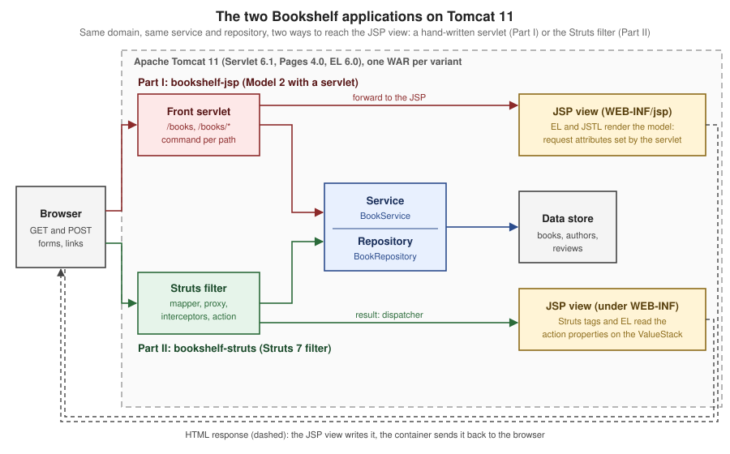

Apache Struts
|
This content was generated with the assistance of AI and should be verified against the official documentation before being relied on in production. |
Part II covers Apache Struts 7.4.0 (released 2026-10-02), the current line of the action-based MVC framework, running on Apache Tomcat 11.0.26 with Jakarta Servlet 6.1, Jakarta
Pages 4.0 and Jakarta Expression Language 6.0 on Java 21; the versions were verified on 2026-10-08, and every example was built into a WAR and run with curl. It builds
bookshelf-struts, the Struts variant of the Bookshelf scenario described on the section landing page. Struts views are mostly JSP, so Part I,
JSP, EL & JSTL, is the natural prerequisite, together with Servlet Fundamentals.

What Part II covers
Struts installs itself in a web application as one servlet filter. The filter asks the action mapper which action a URL names, an action proxy builds the invocation, a stack of interceptors
wraps the action (parameter binding, validation, i18n, file upload, security), the action returns a string, and a result renders the response. Part II follows that sequence: the architecture and
struts.xml, then actions, results and interceptors, then everything that reads and writes data (OGNL and the ValueStack, @StrutsParameter, conversion, validation, i18n), then tags, themes and views, the plugins, and
finally testing, security, Struts 1 and deployment. Struts 7 is a security-sensitive framework: parameter injection and OGNL have a long bulletin history, so every page states the secure default and
Security Bulletins lists the bulletins as a timeline.
Versions and end of life
| Line | Status | Facts |
|---|---|---|
7.x |
Current; 7.4.0 released 2026-10-02 |
7.0.0 was released on 2024-12-19. Java 17 and Servlet 6 or later; the |
6.x |
Maintained; 6.12.0 released 2026-10-02 |
6.0.0 was released on 2022-06-06. The |
2.5.x |
End of life since 2023-10-30 |
The last release is 2.5.33; the line that moved |
2.3.x |
End of life since 2019-09-12 |
The Java EE era line of Struts 2 |
1.x |
End of life since 2013-04-05 |
Struts Classic, a different framework (the last release is 1.3.10); see Struts 1 (Classic) & Migration |
The upgrade path between the lines, one line at a time, is on What’s Changed & Migration.
Maven coordinates
The struts2-bom manages the version of struts2-core and of every plugin that exists at the same version, so a project states the Struts version once and
declares the artifacts without versions. There is no Maven archetype for Struts 7: the archetypes stop at 6.0.0.
bookshelf-struts<dependencyManagement>
<dependencies>
<dependency>
<groupId>org.apache.struts</groupId>
<artifactId>struts2-bom</artifactId>
<version>7.4.0</version>
<type>pom</type>
<scope>import</scope>
</dependency>
</dependencies>
</dependencyManagement>
<dependencies>
<dependency>
<groupId>org.apache.struts</groupId>
<artifactId>struts2-core</artifactId>
</dependency>
<dependency>
<groupId>org.apache.struts</groupId>
<artifactId>struts2-convention-plugin</artifactId>
</dependency>
</dependencies>The Servlet, Pages and EL APIs are provided by the container and JSTL is added to the WAR as in the Maven coordinates of
Part I. The plugin artifacts follow the pattern struts2-<name>-plugin (struts2-json-plugin, struts2-rest-plugin, struts2-spring-plugin,
struts2-tiles-plugin, struts2-bean-validation-plugin, struts2-cdi-plugin); the BOM of 7.4.0 also lists a few plugins that are not published at 7.4.0, which
Other Plugins lists.
Reading order
-
Foundations: start with the architecture and the request lifecycle, then Struts Getting Started,
struts.xml, packages, actions, wildcards, results, exceptions and interceptors. -
Data, parameters and validation: the ValueStack and OGNL first, then
@StrutsParameter, conversion, validation, i18n,ModelDriven, chaining, file upload and tokens. -
Tags and views: the generic and UI tags, themes, FreeMarker and Velocity, and Tiles.
-
Integrations and plugins: Convention, Spring, CDI, JSON, REST and the rest of the plugins.
-
Quality and operations: testing,
devModeand debugging, security hardening, security headers, the bulletins, Struts 1 and deployment.
What’s covered
Foundations
-
Architecture & Request Lifecycle: filter, action mapper, action proxy, interceptors, action and result
-
Struts Getting Started: the Bookshelf (Struts) application by hand
-
Configuration: struts.xml & Constants:
struts.xml, the configuration files and the constants -
Packages and Namespaces: packages, namespaces and inheritance
-
Actions: action mappings, POJO actions and
ActionSupport -
Wildcard Mappings & Method Invocation: wildcards, regular expressions and strict method invocation
-
Results & Result Types: result types and the global results
-
Exception Handling and Global Results:
exception-mappingand the exception interceptor -
Interceptors: interceptors, stacks and the
defaultStack -
Custom Interceptors: writing your own interceptors
Data, parameters and validation
-
ValueStack, ActionContext & OGNL: the ValueStack, the
ActionContextand OGNL -
Parameter Injection and @StrutsParameter: the
paramsinterceptor and@StrutsParameter -
Type Conversion: converters and conversion errors
-
Validation: validators,
-validation.xmland annotations -
Bean Validation Plugin: Jakarta Bean Validation in Struts
-
Localization and i18n: resource bundles and the locale
-
ModelDriven, Preparable & CRUD:
ModelDriven,Preparableand CRUD -
Action Chaining, Sessions & Scopes: chaining, sessions and scopes
-
File Upload and Download:
actionFileUploadand stream results -
Double-Submit Tokens & Wait Pages: tokens and the execute-and-wait interceptor
Tags and views
-
Tags Overview & Generic Tags: the tag library and the generic tags
-
UI & Form Tags: form and UI tags
-
Themes & Templates: themes and FreeMarker templates
-
FreeMarker & Velocity Views: FreeMarker and Velocity views
-
Tiles & Page Layouts: Tiles and page layouts
Integrations and plugins
-
Convention Plugin & Annotations: zero-configuration actions
-
Spring Integration: the Spring plugin
-
Dependency Injection and CDI: the internal container and CDI
-
JSON Plugin & AJAX: the JSON plugin and AJAX
-
REST Plugin: the REST plugin
-
Other Plugins: the remaining, removed and retired plugins
Quality and operations
-
Testing: testing actions, interceptors and views
-
Debugging, Dev Mode & Logging:
devMode, debugging and logging -
Security Hardening: the hardening checklist
-
Security Headers: CSP, COOP, COEP & Fetch Metadata: browser-side defences
-
Security Bulletins: the S2 security bulletins as a timeline
-
Struts 1 (Classic) & Migration: Struts 1 and the way out of it
-
Deployment & Production: taking a Struts WAR to production